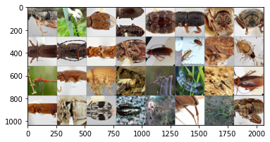

5. Dive into Deep Leanring
In this project, I am traning a simple deep learning model(CNN) to classify beetles, cockroaches and dragonflies using images from https://www.insectimages.org/index.cfm. The CNN model was trained using Pytorch Package
Data Preprocessing
STEP 1: Transform Image Data
Transforms are common image transformations. They can be chained together using Compose in Pytorch. Since images in the folder have different dimensions, torchvision.transforms.CenterCrop function was used to crops the given images at the center with a identical size of 256 x 256. torchvision.transforms.ToTensor converts a PIL image or numpy.ndarray to tensor, which is needed for model training in Pytorch. torchvision.transforms.normalize normalize the converted tensor image with mean and standard deviation. By normalizing the images, we can speed up the training and converge quickly due to the zero-mean.
STEP 2: Load Train, Validation and Test Data
Dataloader construct datasets through indicated paths. It also provides provides an iterable over the given dataset which combination of sampler and datasets. Creating a PyTorch Dataset and managing it with Dataloader keeps your data manageable and helps to simplify the machine learning pipeline<\p>
Sanity Check: Plot the image data before training

Construct and Train the CNN Model
STEP 1: Construct the CNN model structure
This image classification model is constructed with two convoltional layers, two MaxPool Layers and three fully connected layers.
STEP 2: Define Hyperprameters
Before strating the model training, we define hyperprameters such as learning rate, number of epoches, L2 regularization strength (to prevent overfiting) and optimizer.<\p>
STEP 3: Train the Data
Train the CNN model with gradient descent calculation and loss function. Evaluate the model accuracy on validation data after each updates and store the average loss for each epoches<\p>
Plot the Results
Accuracy VS. Number of Epoches<\p>
Loss VS. Number of Epoches<\p>
Testing Accuracy<\p>